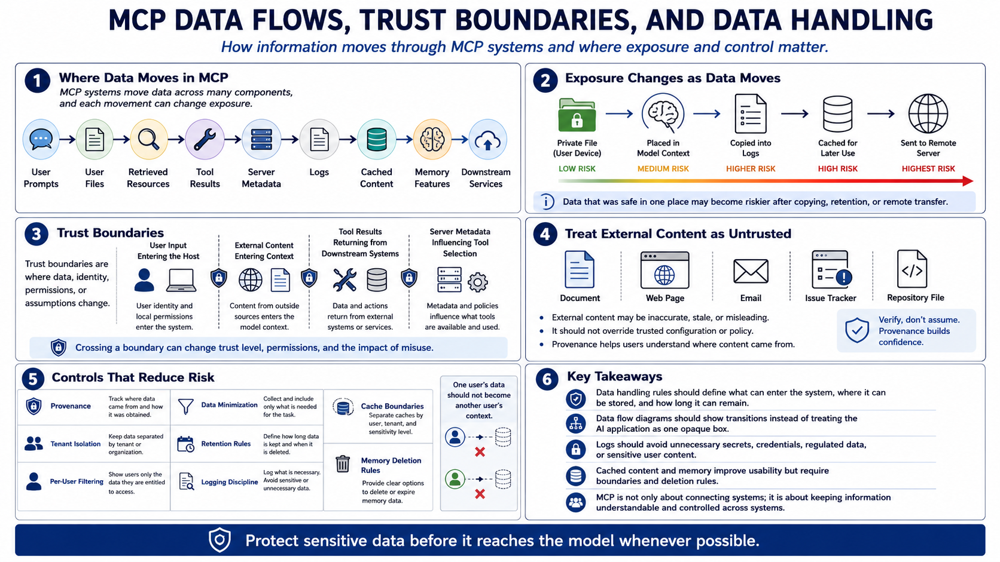

Data Handling and Trust Boundaries
Connecting to LMS... Progress: in progress

Narration
MCP systems move data through prompts, user files, retrieved resources, tool results, server metadata, logs, cached content, memory features, and downstream services. Each movement changes exposure. A file that was safe in a private workspace may become riskier if placed into a model context, copied into logs, cached for later use, or sent to a remote server. Data handling rules should describe what can enter the system, where it can be stored, and how long it can remain.
Trust boundaries are points where data, identity, permissions, or assumptions change. User input crosses a boundary when it influences model behavior. External content crosses a boundary when it enters context. Tool results cross a boundary when they move from a downstream system back to the host. Server metadata crosses a boundary when it influences model tool selection. Data flow diagrams should show these transitions instead of treating the AI application as one opaque box.
External content should be treated as untrusted input. A document, web page, issue, email, repository file, or resource may contain inaccurate, stale, or misleading text. That content can still be useful, but it should not override trusted configuration or policy. Provenance helps the system and user understand where content came from. Tenant isolation and per-user filtering prevent one user's data from becoming another user's context. Data minimization reduces how much sensitive information is exposed.
Retention and logging require careful design. Logs can support investigation, but they should avoid unnecessary secrets, credentials, regulated data, or sensitive user content. Cached content and memory can improve usability, but they need boundaries and deletion rules. Sensitive data should be protected before it reaches the model where possible. MCP fundamentals are not only about connecting systems; they are about keeping information understandable and controlled as it moves across systems.